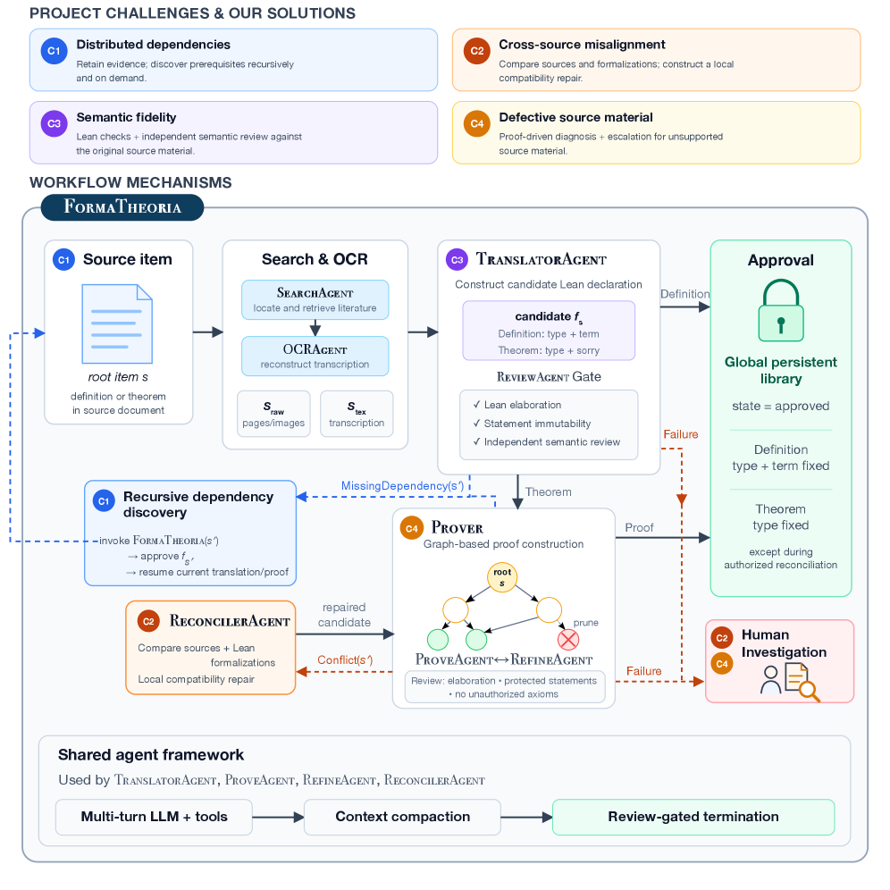
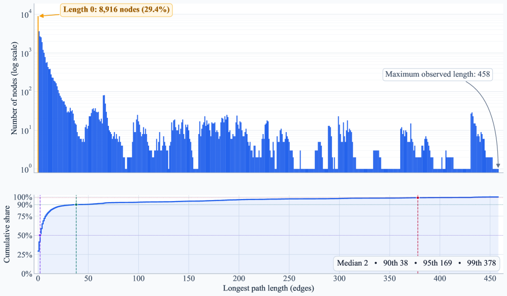

FormaTheoria: Constructing Large-Scale Lean Theories from Mathematical Literature $-$ Toward the Formalization of the Classification of Finite Simple Groups
Tianjiao Nie, Ao Zhang, Yusen Tang, Damiano Testa, Shing-Tung Yau, Peng Li, Yuan Zhou
An AI-assisted, agent-based workflow formalizes major components of the Classification of Finite Simple Groups as machine-checked Lean developments building on Mathlib.
Abstract
Large-scale formalization of advanced mathematics requires more than translating individual statements: it must reconstruct a coherent theory distributed across heterogeneous sources. This process raises four challenges: discovering implicit dependencies, correcting source defects, preserving semantic fidelity, and reconciling cross-source misalignments. We present FormaTheoria, an end-to-end, AI-assisted workflow that coordinates source acquisition, formalization, proof construction, recursive dependency discovery, independent review, and reconciliation, while preserving provenance and protecting approved declarations. A shared agent framework supports long-horizon execution through tool use, context compaction, review-gated termination, section-level source context, and dependency-aware batch parallelization. Applying FormaTheoria to major components of the Classification of Finite Simple Groups (CFSG), we construct a machine-checked Lean development extending through the Bender–Suzuki theorem and encompassing the Feit–Thompson Odd Order Theorem, Glauberman's $Z^*$ theorem, and the Brauer–Suzuki theorem. This development verifies an extensive body of deeply interdependent finite-group theory while providing a foundation for continuing the CFSG formalization. An empirical analysis of the code and recorded construction process supports the practical relevance of the identified challenges and illustrates the roles of the corresponding workflow components. Together, these results demonstrate how AI-assisted workflows can reconstruct mathematically significant formal theories from distributed literature by combining language-model agents with formal verification, structured review, and explicit dependency management.
Problem
Large-scale formalization of advanced mathematics requires reconstructing a coherent theory distributed across heterogeneous sources, involving implicit dependencies, source defects, semantic fidelity, and cross-source misalignments. The Classification of Finite Simple Groups (CFSG) exemplifies this because its proof spans a large, historically layered literature.
Approach
FormaTheoria is an end-to-end AI-assisted workflow coordinating source acquisition, formalization, proof construction, recursive dependency discovery, independent review, and reconciliation into an evolving Lean library. A shared agent framework supports long-horizon execution via tool use, context compaction, review-gated termination, section-level context sharing, and dependency-aware batch parallelization. TranslatorAgent produces source-faithful Lean declarations, a graph-based Prover constructs proofs, and ReconcilerAgent repairs cross-source incompatibilities while preserving approved declarations. Unresolved ambiguities are escalated for human investigation.

Figure 1: Overview of FormaTheoria . Starting from a root source item, the system retrieves and transcribes the relevant source material, constructs a candidate Lean declaration, and, for a theorem, performs graph-based proof construction before independent review and approval. Newly discovered dependencies are formalized recursively, cross-source conflicts are handled by ReconcilerAgent , and unr
Results
The workflow produced a machine-checked Lean development of over 994,000 lines across 850+ files, extending through the Bender–Suzuki theorem and encompassing the Feit–Thompson Odd Order theorem, Glauberman's Z* theorem, and the Brauer–Suzuki theorem. Dependency discovery expanded the source corpus fivefold from three entry points to fifteen sources. Dependency-aware parallelism cut wall time for Glauberman's Z* proof from 51.4 to 12.3 hours (4.2x speedup) at 45.7% higher total token cost.

Figure 3: Distribution of the maximum path length starting from each project declaration in the Bender–Suzuki dependency closure.
Mode
Wall Time
Total Tokens
Output Tokens
Sequential
51.4 h
2,085,361,637
7,645,079
Parallel
12.3 h
3,038,587,634
9,077,309
Change
-76.1%
+45.7%
+18.7%
Table 10: Parallel and sequential proof construction for Glauberman's Z* theorem.